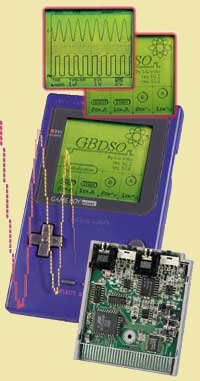
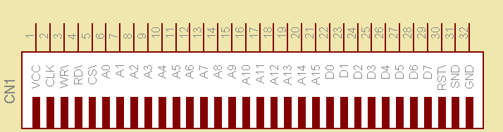
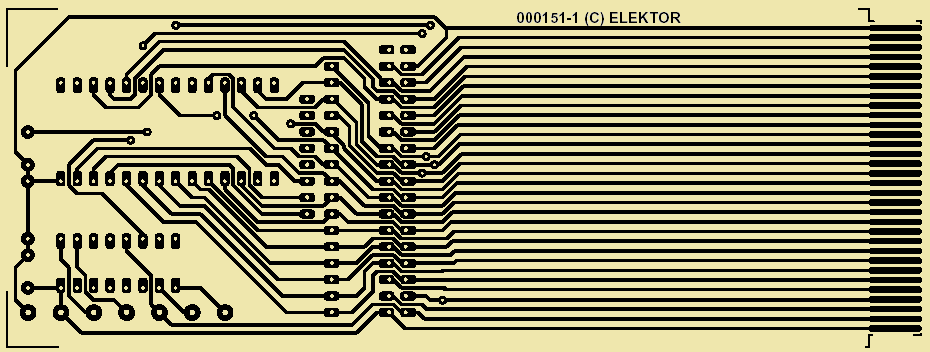
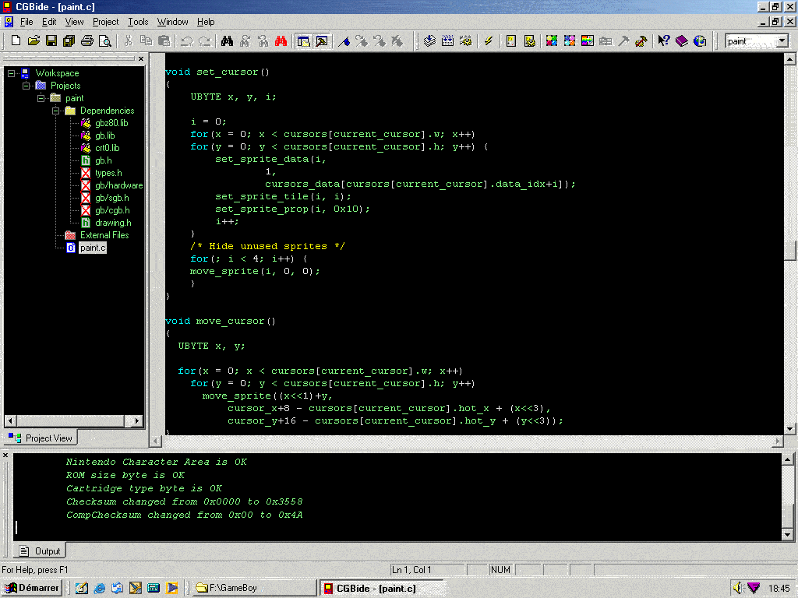
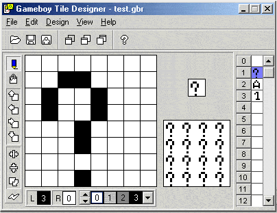
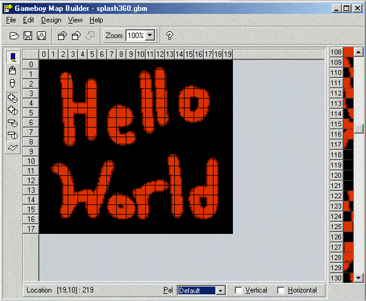

Présentation du Projet GameBoy
Transformer une console portable en un périphérique intelligent et économique.
fig1: GBDSO
La Game Boy est un formidable périphérique. Si vous en doutez encore, il suffit pour vous en convaincre de lire la description du GBDSO (GameBoy Digital Sampling Oscilloscope) qui transforme la GameBoy en oscilloscope numérique et en analyseur de spectre[cite: 27]. Il s'agit du plus extraordinaire projet que je connaisse, décrit dans la revue ELEKTOR n°268 (octobre/novembre 2000) [http://www.elektor.presse.fr] et vendu par PUBLITRONIC[cite: 27].

fig 2: La GameBoy couleur
La GameBoy couleur est aujourd'hui suffisamment bon marché pour envisager de l'utiliser comme périphérique de nos réalisations à micro-contrôleur[cite: 27]. Elle est compacte, dispose d'un afficheur LCD graphique couleur, d'une liaison série, d'un émetteur-récepteur infrarouge, d'un clavier de 8 touches et peut produire du son[cite: 27].

De plus, la GB possède un microprocesseur similaire au Z80 qui peut prendre à sa charge une part des fonctionnalités de votre montage (gestion de l'affichage, du clavier, mémoire, ports de communication)[cite: 27]. Outre son clavier, port IR et série, il est possible d'y inclure une carte électronique d'extension via son connecteur 32 points[cite: 27].

Développement Hard & Soft
Pour le développement hardware, j'utilise une carte d'extension (décrite dans ELEKTOR N°271 - 01/2001) qui s'enfiche dans le connecteur 32 points[cite: 27]. Cette carte supporte une EPROM 32Ko ainsi qu'un 74HC138 pour le décodage d'adresse[cite: 27]. Un émulateur d'EPROM m'évite de "griller" des EPROM pendant le développement[cite: 27].
↓ Télécharger les fichiers de la carte de prototypage (GBprototype.zip)

Environnement Logiciel (C / GBDK / CGBide)
Pour programmer la GameBoy en langage C, j'utilise l'IDE CGBide en symbiose parfaite avec le compilateur GBDK (GameBoy Development Kit)[cite: 27]. Pour les graphismes, les éditeurs GBTD (GameBoy Tile Designer) et GBMB (GameBoy Map Builder) permettent de générer directement le code source en C[cite: 27].


